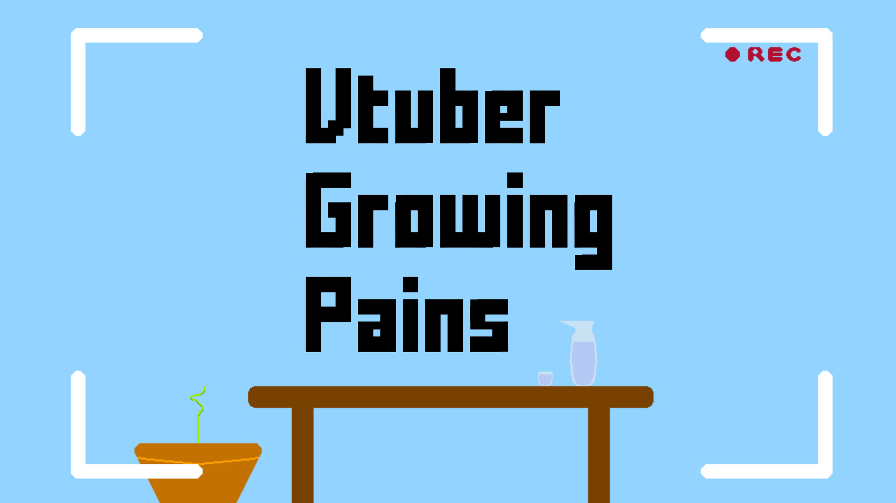
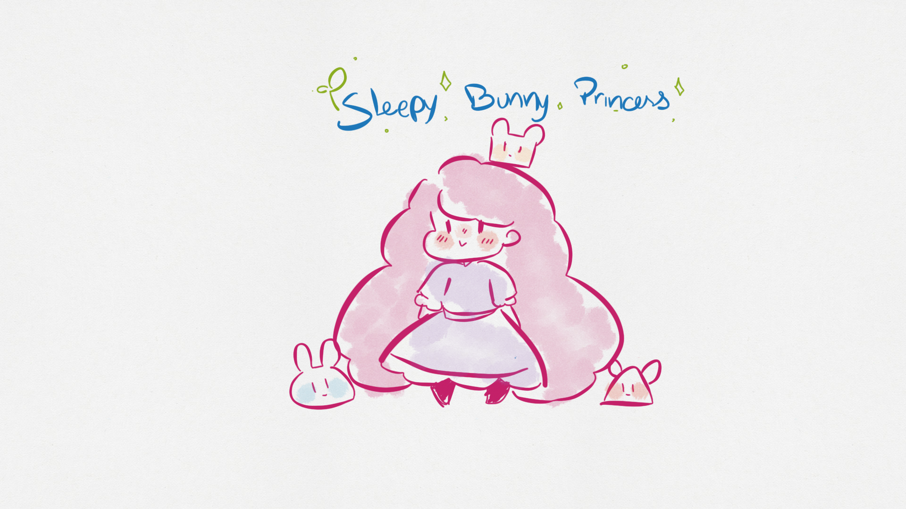
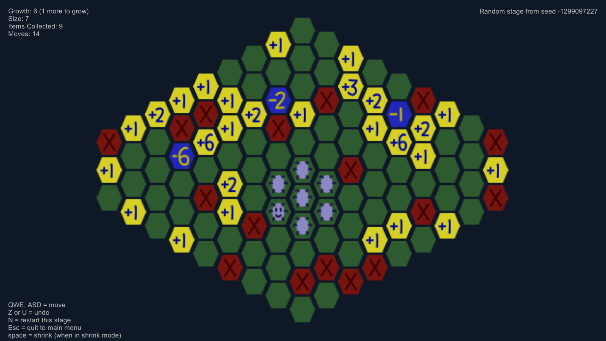
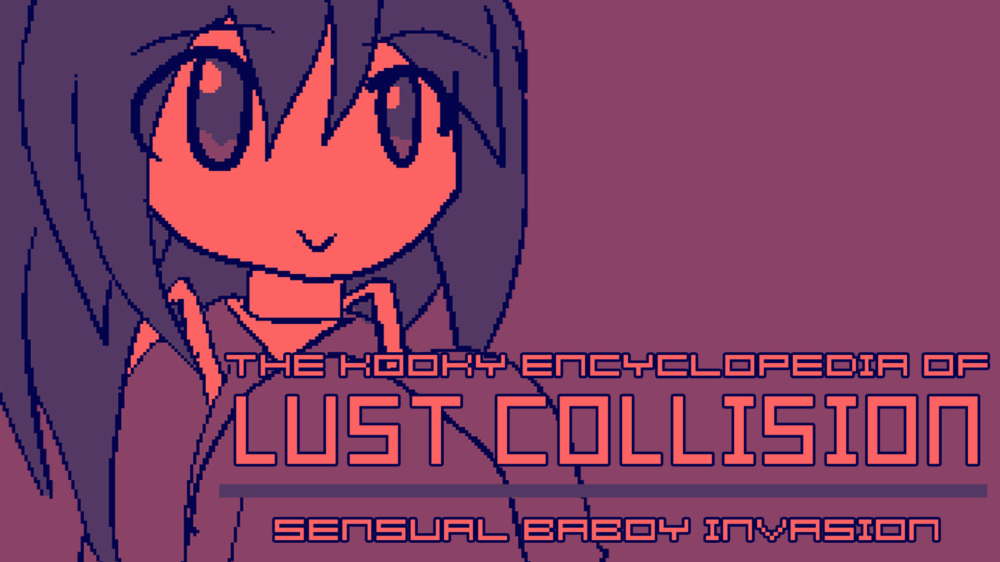

A game jam is a challenge where individuals or teams attempt to make a game, from start to finish, in a set amount of time, with a certain theme.
The VTuber Game Jam took place over 24 hours, and the theme of the jam was "Growing".
Please enjoy the games made during this game jam and check out their creators, many of whom are vtubers! The full submission information for each game, including some final thoughts and post-mortem, can be found here.
Making a video game in only 24 hours, especially by yourself, is a near impossible task. I'm proud of everyone who participated, even if they did not get the chance to finish their game.
We do not guarentee the safety or reliability of the files linked on this page.
Growing a following as a Vtuber can be harsh, learn just how harsh it can be.

What were you trying to accomplish?
Learn UI, as I have never done any sort of UI in unity.
What accomplishments are you proud of in this game jam?
My first Game jam and my first "finished" Game.
Going into this I wanted to include lots of vtuber jokes, but the only thing that ended up making it in was the skeb button due to time constraints, so I feel like the idea doesnt come across the same way anymore as I had intended it. No music or sfx either as I had simply no time for it, same for my plan to include an actual character in the background. The game itself can be "completed" in about a minute by just spamming buttons.
Sleepy Bunny Princess is a tiny RPG where you try to make your way through a nightmare-filled castle while growing and befriending little fluffy bunnies to help in your quest.

What were you trying to accomplish?
Mostly figuring out stuff around RPG Maker (and having fun)
What accomplishments are you proud of in this game jam?
Completing a very tiny RPG in about 6 hours.
Not much play testing, there are likely bugs around.
Growth is a puzzle game played on a hexagonal grid. Your goal is to pick up as many items as possible on the grid. As you pick up items, your character grows and occupies more and more hexes in the grid, making it more difficult to maneuver between obstacles and access the remaining items. The challenge is to choose the order you pick up items in and the shape your character grows into. Choosing the right body shape can let you slip between obstacles to pick up more items, or create an "arm" to reach an item through a gap that's too small for your body. The game mechanics are very simple and easy to learn, but the strategy is deceptively deep and an interesting challenge!

What were you trying to accomplish?
To make a puzzle game with a hexagonal rather than square grid. To try to finish a game in under 12 hours. Ideally, it would be nice if aspiring game devs and designers could learn from the game or even modify it to make their own games and stages. I wasn't sure if the puzzles would be fun or boring, but I hoped they would be fun and interesting.
What accomplishments are you proud of in this game jam?
I think I accomplished everything mentioned earlier. The puzzles turned out to be fun and more intricate than I thought at first. I also tried a new "data-driven" approach to game logic, similar to web development, where game objects are destroyed and re-created based on the current game state whenever the player makes a move. This approach allowed me to quickly write the game logic and to implement an undo feature by just pushing and popping the previous game state on and off a stack. I'd definitely like to use this approach again in future turn-based games!
The MC doesn't have an official name but I call them Happy Bug.
The Kooky Encyclopedia of Lust Collision - Sensual Baboy Invasion
Terrorists have stolen the ice cream around town and a young ghost named Ghost must get her ice cream back before her street stand gets shut down. Collect power ups and get stronger to destroy the terrorists that stole all the ice cream.

What were you trying to accomplish?
The main intent of joining this jam is to fight against other VTuber game developers to see how I stack up against the strongest.
What accomplishments are you proud of in this game jam?
Nothing. I think this is perhaps one of my weakest entries in a game jam. Hanging out with everyone during development and finding out more people's favorite foods was what really makes it worth it though.